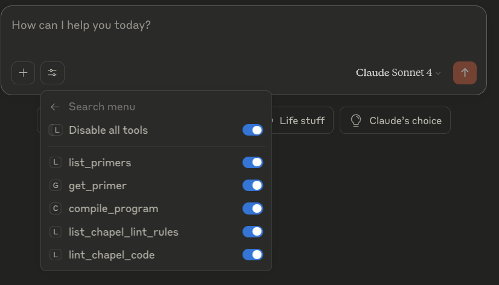
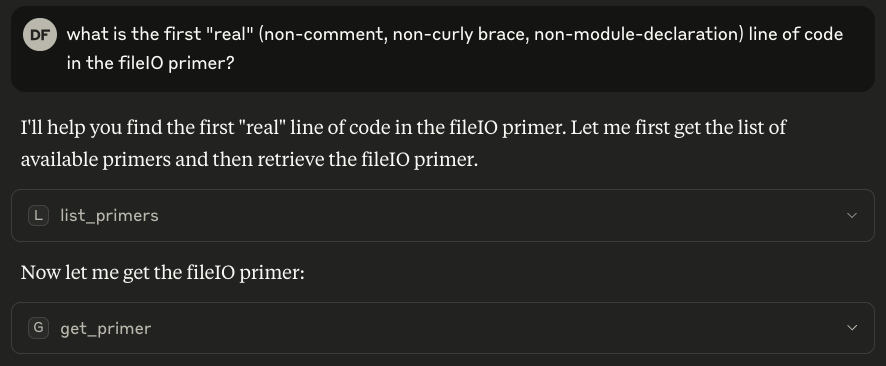
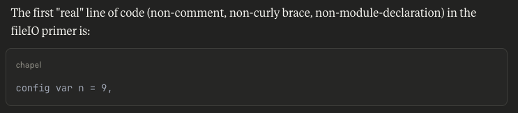
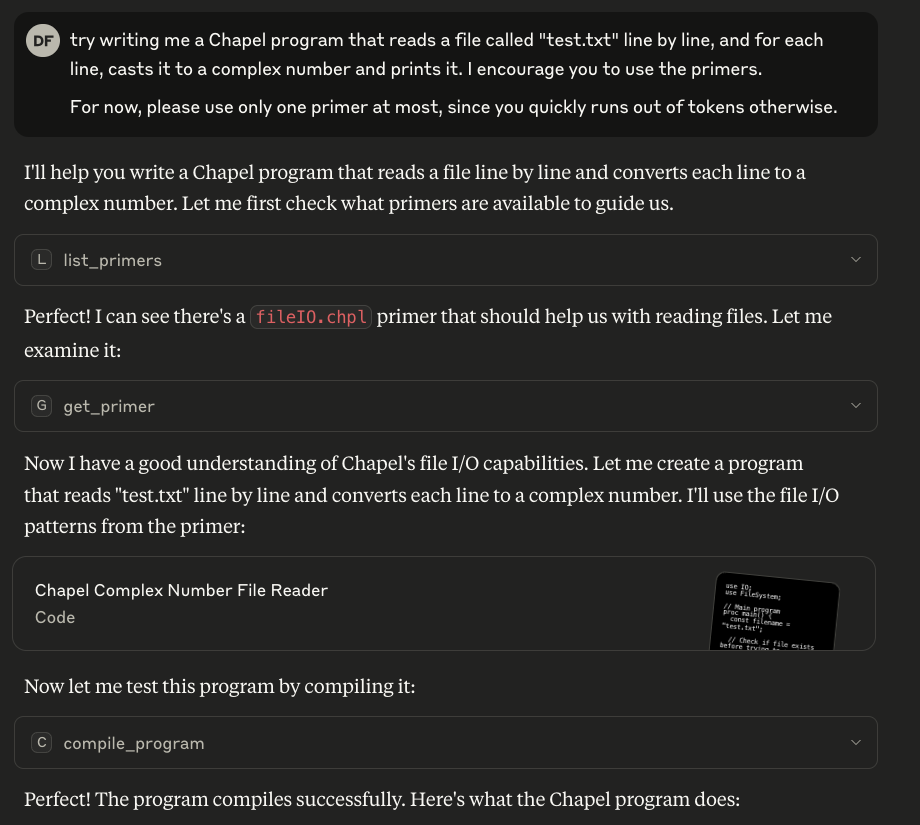
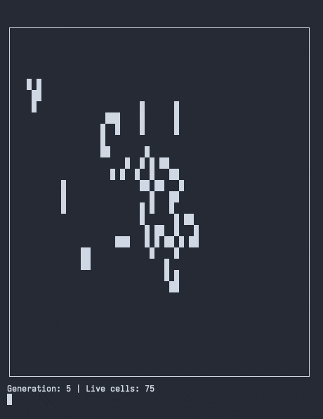
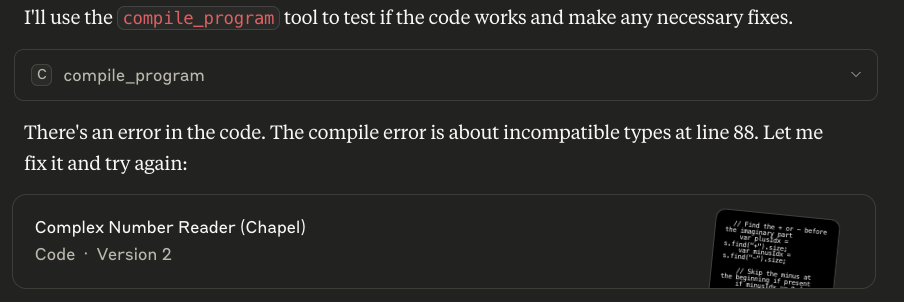
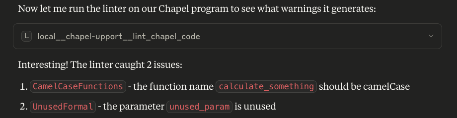
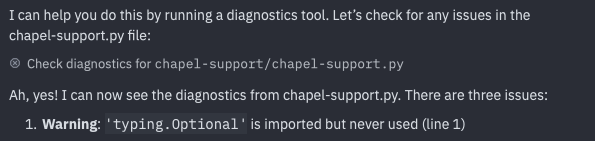

Developer tooling built on Large Language Models (LLMs) is a popular, if controversial, topic nowadays. Generative models have proven themselves capable of generating code in a variety of languages, and they can help newcomers and experts alike. We have been intrigued to explore the possibilities of using LLMs for writing Chapel code. For a novel language like Chapel, however, there are some challenges when it comes to working with LLM-based tools.
- Chapel aims to advance the state of the art when it comes to parallel computing. This means — almost by definition — that far less Chapel code is available, compared to “conventional” languages like Python and C++, in training datasets that power LLMs.
- Prior to its 2.0 release, Chapel evolved rapidly and in backwards-incompatible ways, meaning that those sample programs that were [note:ChatGPT at the time of writing (August 27, 2025) reports its knowledge cutoff to be June 2024. The 2.0 release of Chapel occurred in March of 2024. As a result, there are only a few months worth of post-2.0 code available for training.] may no longer be a good representation of proper code practices today.
Fortunately, LLMs and their surrounding tools are continuously becoming more capable, and we had some luck supplementing them with up-to-date and accurate information about Chapel. To do so, we leaned on the The Model Context Protocol (MCP), which is a standardized way for LLM-based tooling to go beyond token prediction, and interact in various ways with “the outside world.” The protocol is supported by Visual Studio Code, Anthropic’s Claude and Claude Code, Zed, and a variety of other software. This post details our recent experiments with using MCP to help address the challenges I’ve outlined above.
This post can be read in two ways. In one sense, it describes what users writing Chapel might be able to do to improve their LLM-enabled workflow. At the same time, the challenges above would be shared by any other smaller, novel language. Thus, in another sense, this post is an LLM experience report by us as language developers for anyone else who is seeking to push the landscape of programming languages forward, as we are.
“Even if the training of Claude were to permanently stop right now, an MCP-based tool could provide it accurate information in perpetuity.
”
MCP and Large Language Models
The Model Context Protocol provides a way to populate an LLM-based assistant’s toolbox with actions it can take. Each action is typically called a tool. For instance, in the image below, I’ve configured Claude to use the experimental Chapel MCP server. As a result, it has access to five Chapel-specific tools that I’ll describe in this article.

The Chapel section of Claude’s tool menu
When it’s constructing its answer, the assistant can choose to invoke the tools
that have been enabled for it. For instance, I could ask Claude to tell me
the first “real” line of code in the fileIO primer.
Instead of searching or guessing, Claude is able to access the primer file.

Claude accessing the fileIO primer
Eventually, it arrives at the answer:

Claude reporting the first line in the fileIO primer
This is indeed the case.
Actions performed in this way are more resilient against hallucinations or [note:A knowledge cut-off is the point in time after which no information has been used to train the language model. In practice, this means the model hasn’t seen anything that has occurred or been created after that point.] since they provide grounded information that is not simply encoded in the model’s weights. Even if the training of Claude (e.g.) were to permanently stop right now, an MCP-based tool could provide it accurate information in perpetuity.
When working with a smaller language like Chapel, the ability to access
documentation in the form of primers (via the MCP’s get_primer action), saves
an assistant like Claude from having to “guess” correct syntax or features, since
it can consult a vetted example instead. To also save it from guessing
what vetted examples are available, we also give it list_primers.
Here’s
[note:This example might seem contrived, and it is. My goal was to ask the model
to write a program that hasn’t been written before, to reduce the chances
of it simply regurgitating an example that was found somewhere in its
training set.
Also, I’ve included my full prompt in the interest of transparency. You
can see that I’ve asked the model not to pull in more than one primer. This
is mostly because I’m using a free Claude account to experiment, and thus
am subject to limitations on chat length.]
of Claude using Chapel’s MCP tools.

Claude accessing the fileIO primer to help it write code
Above, the assistant used another Chapel-provided tool, compile_program,
to test if the code it wrote was valid. Since the standalone Claude assistant
is confined to the chat window, it could not run the program to check for
runtime errors. A coding agent would not be subject to such limitations;
we’ll talk about those in a little bit.
In a more exciting example, I asked Claude to generate a “Conway’s Game of Life”
program. Mostly, I just wanted something that lent itself to pretty visuals.
I did so as part of a public demonstration
that covers much of the same content that
we’ve discussed here. There too, Claude used the primers (it requested the forallLoops
primer), compiled the program, found an error, fixed it, recompiled, and
even linted the resulting code. The result was notable for two reasons:
-
Although Chapel has a test case implementing the Game of Life, it was clear that Claude did not simply regurgitate it while writing the code — there were numerous significant differences.
-
In some of my runs — depending on my prompt — Claude generated an animated visualization of the cells. The prettiest one (they were all different) included borders generated with Unicode characters. Here’s what that looked like:

A terminal-based animation of Conway’s game of life generated by a Chapel program Claude wrote
Tools in Chapel’s MCP Prototype
In my screenshots and links I’ve been showcasing my MCP server prototype that I wrote while playing with Chapel and LLMs. It is open source, so you can install it and try it out yourself.
(How do I set up the MCP prototype on my machine?)
The repository for Chapel’s prototype MCP server is here at the time of writing. Please refer to its README.md file for installation instructions. In
short, you can use uv to set up the project and install the necessary
dependencies.
From there, you must configure the MCP server within your LLM-enabled tools. I’ve set it up in Visual Studio Code, Claude, and Claude Code. In pretty much all of these, you need to write some sort of JSON configuration.
-
VSCode: I had to look up
mcpin the Settings search box, where I was able to find a link tosettings.json. In there, I added the following:"mcp": { "inputs": [], "servers": { "chapel-support": { "command": "uv", "args": [ "--directory", "/path/to/chapel/mcp/server", "run", "chapel-support.py" ], "env": {} } } } -
Claude: One must use the desktop Claude app, rather than the web version, since only the desktop application supports MCP. I had to edit
claude_desktop_config.jsonto add:"mcpServers": { "chapel-support": { "command": "uv", "args": [ "--directory", "/path/to/chapel/mcp/server", "run", "chapel-support.py" ] } } -
Claude Code: I had to modify
~/.claude.json. The relevant piece is:"mcpServers": { "chapel-support": { "type": "stdio", "command": "uv", "args": [ "--directory", "/path/to/chapel/mcp/server", "run", "chapel-support.py" ], "env": {} } }
In Zed, there is currently a bug with MCP servers and GitHub Copilot Chat, which is the precise combination that I was using. As a result, I don’t have a way to validate that my config was working.
I’d now like to give a more detailed description of the tools I’ve provided at the time of writing, and give some rationale for including them.
-
list_primersandget_primersserve to provide the model with up-to-date examples of Chapel code. This approach is very valuable for languages that are relatively underrepresented in a model’s training dataset. It also helps decouple the language’s evolution from model updates on the side of the LLM provider: if Chapel’s best practices were to change the day after a model update, an updated MCP server can immediately supplement the model’s now-stale knowledge. -
compile_programis used to invoke the Chapel compiler on a piece of code created by the LLM. For users who interact with LLMs via a chat-based assistant (transferring code and changes to their editor), this can save on the number of round-trips in case the model makes a mistake.Even without my prompting (see screenshot above), Claude chose to compile the program to verify that it works. If it had written incorrect code (as it had in other experiments of mine), it would keep trying, instead of simply concluding its response.

Claude finding errors in its code by compiling a program
As I will discuss below, AI Agents (such as Claude code) can do this without specialized MCP servers. In that way,
compile_commandhas a more narrow niche. However, for [note:Anecdotally, many of the people I know still do. Apparently, this means they aren’t doing it like you’re supposed to; pragmatically, though, that means there’s room for improving these folks’ experience with MCP supplements.] the user experience improvement is worthwhile. -
list_chapel_lint_rulesandlint_chapel_codehelp catch stylistic issues in code produced by the LLM, almost like an early stage in code review. If not all of the Chapel code in an LLM’s data set is valid in modern Chapel, even less of all such code fits the recommended stylistic conventions.These tools leverage
chplcheckto serve a similar function tocompile_programabove.
Claude finding linter warnings in its code
As with
compile_program, this reduced the effort required from a user to update, clean up, or integrate generated code. Since the LLM will tend to keep working on its code as long as it has linter warnings to address, the final product will be in better shape for human review.
MCP in the Age of Agents
If I had a dollar for every time I saw “Agentic” on my LinkedIn feed, I
could probably retire right now. AI Agents are an application of LLMs that
independently iterate on tasks, interact with their environment, and
autonomously work towards some goal. Claude Code,
which I’ve mentioned a few times in this post, and which is not the same
as regular Claude, is one agent I’ve played with. It sits in your terminal
and interacts with it like a human does: it types commands, browses the
file system, writes some code, compiles it, etc. For such an agent, there is
no need to perform an MCP call to compile_program, because it can just
run chpl (the compiler) from the terminal. Better yet, since it’s working
in your project directory, such an agent could figure out that you use
a Makefile, or Mason,
and
[note:In fact, when building Arkouda as
part of one of my experiments, my agent observed that a “dependency check”
step in the build process that was running each time was taking too long. So,
it found an environment variable that disables this check (which I had no idea about),
and started using it.]
It could also invoke the chplcheck
linter, read its output, and fix the necessary warnings. This is what I meant
earlier by agents “not needing” compile_program and the like.
For such agents, I still believe the list_primers and get_primer commands,
along with any future documentation-retrieval features, are useful. General
documentation such as the primers almost certainly sits outside of
any given project’s structure, so a naive search of the working directory
might not find it. In a similar vein to what I described above, another
advantage to standalone documentation is that updates to it can be decoupled
from updates to the project, ensuring its freshness.
One might argue that providing documentation like the primers via a special MCP server is just a special case of Retrieval-Augmented Generation (RAG) or internet search. The primers are available via search engines, after all, so why bother developing an MCP server?
I concede that in the future, agents may simply search the web as humans do for relevant documentation. It’s plausible to me that they will distinguish “official” documentation from unofficial resources, find the appropriate pages, and so on. In a move reminiscent of the bitter lesson, general-purpose search might supplant domain-specific knowledge databases like MCP-provided primers. However, at the time of writing, I see distinct advantages to the current, MCP-based approach:
- Lower latency: I’ve watched AI assistants perform internet searches, and in my experience, they are quite slow. It takes time to poll the web, prioritize sources, and synthesize a response. A local MCP server can short-circuit the process of discovering and accessing documentation in a way that doesn’t even require an internet connection.
- Focus: If you’re performing a search on the internet, the results for your query are provided and ranked by the search engine’s heuristics. This makes it possible to manipulate what data a model will get back. If you’re using local search, perhaps via vector embeddings, the argument is symmetric — only the heuristic changes.
- Uniformity: Search-based systems today are proprietary tools that augment language models. This means that their behavior can vary according to the provider (OpenAI, Anthropic, GitHub, etc.). A single MCP server, on the other hand, will provide the same results to all models, and thus work more consistently.
Given the rate at which LLM tooling is evolving today, it’s hard to predict what the landscape will look like even a year from now. However, for the time being, agentic or not, an MCP server for Chapel seems to be a useful addition to an LLM’s repertoire.
Conclusions and Looking Ahead
The MCP server for Chapel is the result of a relatively short-term investigation. As a result, it’s in its early stages, and we are still looking to evaluate its effectiveness. However, it has shown promising results for both chat-based and agentic LLM tools.
There are still areas within MCP for Chapel’s server to explore. As I demonstrated
above, in all of my experiments, I had given instructions to the LLM to use
tools like get_primer (though at times, the model chose to do so on its own).
MCP allows servers to provide pre-written prompts to their users. Rather than
having to read my post and know to say “use the Chapel tools you have”, a
user might be able to leverage pre-written prompts that include such instructions.
Another interesting area within MCP is to provide the model with the same IntelliSense that editors enable for their users. Both Visual Studio Code and Zed have support for feeding diagnostics into the LLM:

Claude accessing errors and warnings in a file using Zed’s diagnostic tool
This support is not universal — it depends on the editor, LLM provider, etc.
In the future, it would be interesting to explore using Chapel’s MCP server
to provide this information to MCP-compatible clients, using chpl-language-server. Other potentially-useful aspects
of Chapel programs, such as go-to-definition and on-hover documentation, could
also be provided by the server to the model.
Please reach out to us if you have feedback or requests for the server. We’d love to hear from you!